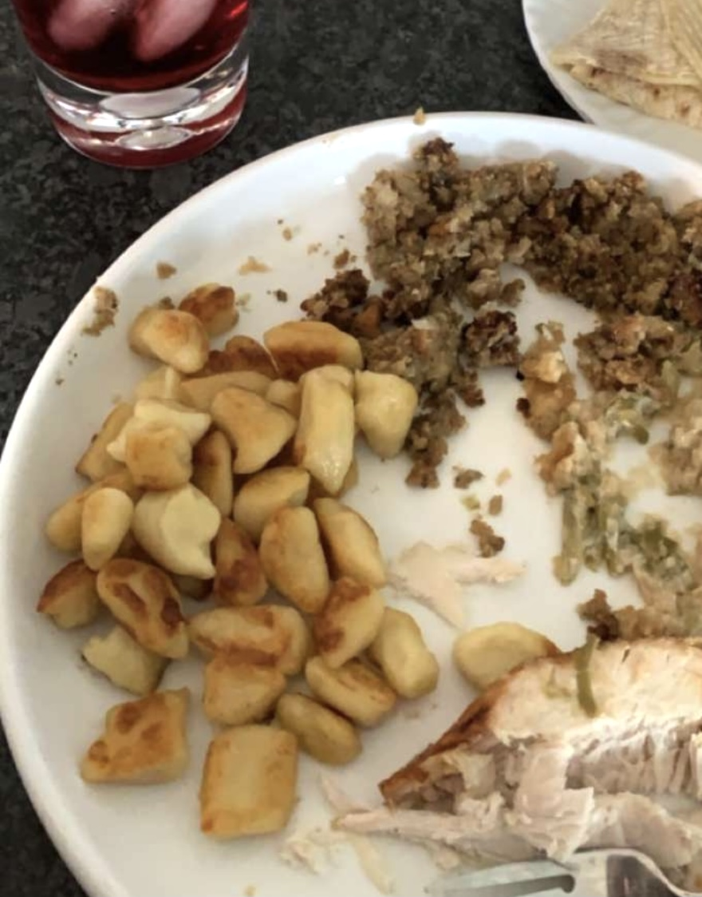

Grandmas Potato Dumpling Recipe
Ingredients
- 1 Cup Cold Mashed Potatoes
- 1 Cup of Flour
- 1 Egg
- 1 Tablespoon Sour Cream

Directions
- Combine mashed potatoes into flour (easiest way is to use clean hands to mix).
- Beat together egg and sour cream in seperate bowl.
- Fold egg and sour cream into flour mixture.
- Cover with a dish towel and let rest for 10 minutes.
- Roll out the rested dough and cut into coin sized bites.
- Cook in boiling salted water for 10 minutes or until they float to the top.
- Fry with melted butter and salt.
Tips:
- For parties larger then 4 quadruple the batch, they go very fast!
- Frying with garlic butter makes them even more delicious!
- Can be easily made gluten free with gluten free flour!